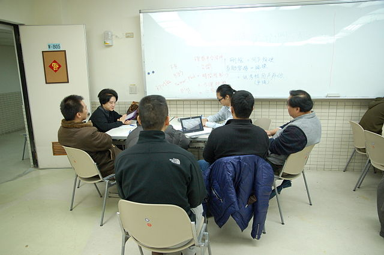
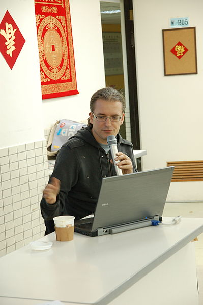
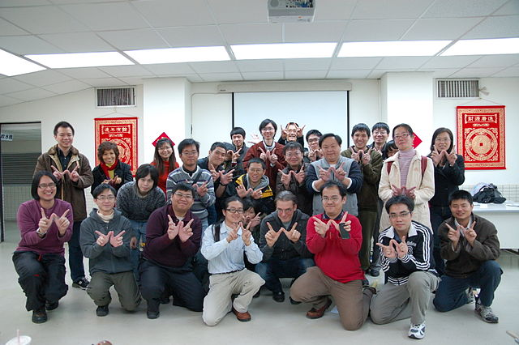

也紀念我們永遠的朋友 李士傑先生（Shih-Chieh Ilya Li）。
歲末年終大掃除，維基冬聚談除錯
2012 年 1 月 7 日，再過半個月左右就是農曆新年的到來，也是維基百科台灣社群 2011 年冬聚的日子。在歲末年終的時候，來個除舊佈新是華人的習俗，中文維基百科將近 40 萬的條目，也需要好好的清理一番了。比起英文維基百科來說，中文維基百科的條目素質往往不是那麼令人滿意。因此許多維基百科的編者、讀者，就在這場盛會中，一起來探討如何能夠為維基百科除錯，讓內容更完善。
維基編輯經驗談，收穫滿滿
上午時段率先開場，是由 2006 年起就投入編輯的 Supaplex 進行為時半小時的專題演講，題目是「為何犯錯？怎樣除錯？」。Supaplex 先從各方對維基百科的想像切入，勾勒出維基百科「協作」觀念的實際運作方式，再從寫作者的專業性、視角的侷限等等方向，分析出錯的種種原因。最後再提出多項建議，從個人對資料的收集到尋求其他維基人的協力，給予在場參與者許多實用的參考。
▲ 圖1 Supaplex 的專題演講。出處：Wikimedia Commons，Harenwang 拍攝，採用 CC-BY-SA 3.0 Unported 授權。
緊接著登場的是「條目維護面面觀」座談會，由三位活躍的維基編輯者擔任來賓，從條目維護實際經驗的分享，讓所有在場的參與者能了解維基社群在條目維護上嘗試過的多種方式，以及面臨到的難題。
「魔法設計師」是台灣最早參與百科編寫的資深維基人之一，分享了早期「台灣主題」頁面，由幾個朋友聯合，共同更新特定條目的經驗。他認為現在網路溝通的平台更多更便利，要發起這樣的合作更方便；然而也因為方便的工具太多，反而造成力量的分散。如何克服缺點保留優點，給有心協作的維基人提出一個值得思考的方向。「TX55」則是主要以單打獨鬥為主，但是喜歡寫 ACG 主題條目的他，在創作過程中也有碰到 ACG 專題成員主動參與協助。他從個人條目創作者的角度，也提出了對群體協作機制的見解。「安可」則是目前「條目質量提升計畫」的總主持人，不但分享了多種形式的合作經驗，同時也注意到討論氣氛對於協作平台是否活躍有一定的影響力。
▲ 圖2 座談會講師，由左至右分別為魔法設計師、TX55、安可以及主持人 Reke。出處：Wikimedia Commons，Harenwang 拍攝，採用 CC-BY-SA 3.0 Unported 授權。
▲ 圖3 座談會實況，TX55 的分享。出處：Wikimedia Commons，Harenwang 拍攝，採用 CC-BY-SA 3.0 Unported 授權。
創意討論火花多，跨國研究眼界開
經過一個上午的分享，不管是已經參與過編輯的老手，或是從未有編寫經驗的讀者，都對維基百科的除錯機制有了認識以及新的思考。因此下午的時間，就以類似 Unconference 的型式進行了一個小時的創意討論會。會中主要觀注三個焦點，第一是如何讓更多的專家願意參與維基百科的編輯，第二是如何建立更容易協作的平台，第三則是如何協助編者解決資料搜集的困難。與會者無論參與維基編輯資歷的深淺，都在主持人的引導之下，由自身經驗出發找出問題，並在集思廣義的情況下提出可能的創意。
雖然短暫的討論時間並沒有辦法提出完美的計劃，然而在熱烈的氣氛之中仍然併發出許多創意的火花。例如在促進專家投入維基的方法上，與會者認為要讓忙碌的教授投入維基寫作有一定的難度，但是可以從吸引研究生的編輯興趣為主，藉由師生的關係引入專家級的識見；至於吸引學生族群投入編輯的方法，則可以考慮透過網路媒體的宣傳塑造出明星化的維基人，激發參與者的榮譽感。又例如在討論如何建立協作平臺的小組，試著在列舉出理想平臺的條件之後，把網路上常見的服舉務拿來「超級比一比」，為它們各項條件打出分數；經過數據化的衡量，精挑細選出郵件群組服務做為目前最理想的協作小組溝通平臺，為社群未來建立合作機制，提供了相當具有參考價值的建議。
▲ 圖4 分組討論實況－那些年，一起寫的維基。出處：Wikimedia Commons，Harenwang 拍攝，採用 CC-BY-SA 3.0 Unported 授權。
有了台灣維基社群的創意激盪，本次活動更進一步擁有了國際級的視野。出生德國、目前在維基媒體基金會 (WMF) 服務的 Tilman Bayer，透過中文現場口譯，提供了「關於維基百科可信度的學術性研究」簡報。簡報中指出英文維基百科的條目雖然可能有一些深度不足的問題，但是在資料正確性上，許多領域都有極佳的表現，堪與專家編纂的工具書匹敵。雖然報告中指出，針對其他語言版本的研究資料目前仍不足，但是英文維基的輝煌成果仍可做為中文維基百科的編輯者追求的目標。
▲ 圖5 Wikimedia Foundation 負責 movement communications activities 的 Tilman Bayer 來到活動現場演講，題目是「關於維基百科可信度的學術性研究」。出處：Wikimedia Commons，Harenwang 拍攝，採用 CC-BY-SA 3.0 Unported 授權。
大小維基聚會，邀您一起參與
雖然精彩的冬聚活動已經結束，但是對於維基百科除錯、提升品質的工作，這只是一次開端而已。擁有近 40 萬條目的中文維基百科，內容的生產、編輯、排版、修正、維護、更新等工作，都是由志願者無償投入時間心力來完成。因此需要更廣大的編輯隊伍，才能夠更全面地改善所有條目的品質。目前台灣已有台北、台中兩地社群有固定的聚會，南部的台南社群也力圖重啟聚會。這些小型但頻率較高的地方聚會，除了維繫維基人的感情之外，也肩負著編輯技巧分享的任務。錯過了這次的聚會沒有關係，記得到維基百科上注意台灣各地社群聚會的消息，只有透過您的熱情參與，才能讓中文維基百科成為最可靠的網路工具書。
▲ 圖6 活動大合照。出處：Wikimedia Commons，Harenwang 拍攝，採用 CC-BY-SA 3.0 Unported 授權。
相關連結
作者簡介
Reke，台灣維基社群成員，PTT 電影板板主，主業為文字工作者。著迷於電影，耽溺於文字；在現實裡怯弱地柔從，在評論裡驕傲地反抗。電影部落格：https://rekegiga.blogspot.com/
OSSF Newsletter : 第 188 期 PaaS：程式語言開發在雲端「Programming in Paas」（下）
Tags: Wikipedian Meet, 維基聚會, Tilman Bayer, Supaplex, 魔法設計師, TX55, Unconference, 安可, 台灣主題, 維基媒體基金會,
Category: FOSS News
Special


Address：No.128, Sec.2, Academia Rd., Institute of Information Science, Academia Sinica, Nangang District, Taipei City 11529, Taiwan (R.O.C).
Privacy Policy. Terms-of-use